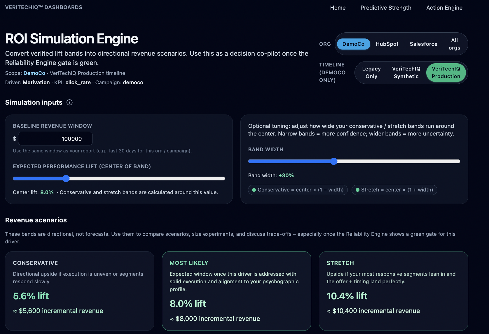
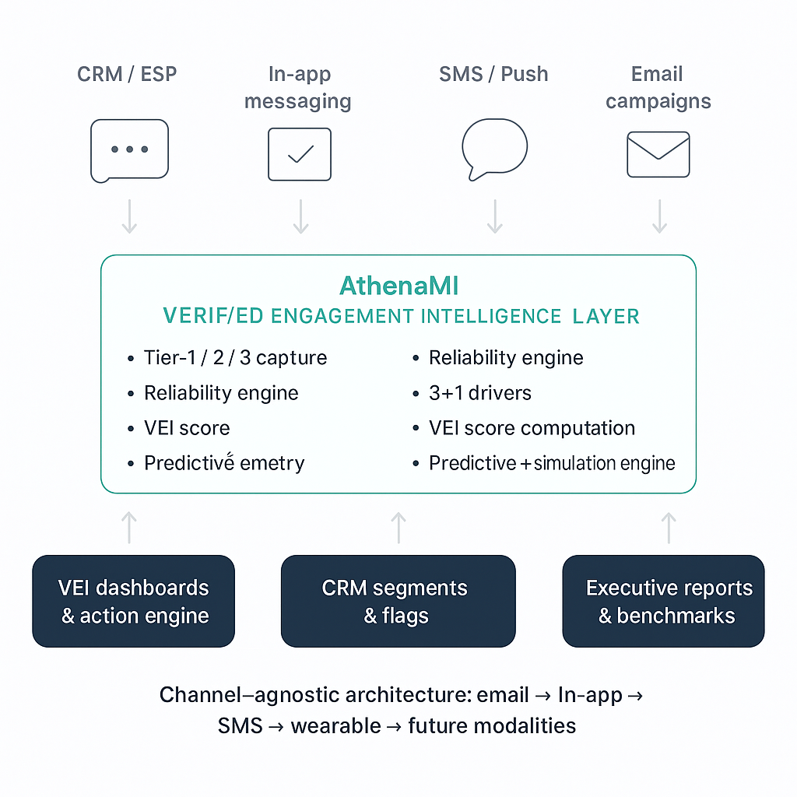

Cover
AthenaMI™
Verified Engagement Intelligence for modern CRMs.
AthenaMI turns noisy campaign metrics into decision-grade engagement intelligence — explaining who is truly engaged, why, and what to do next across HubSpot, Salesforce, Braze, Klaviyo and more.
Built on I-O psychology, reward-backed feedback, and a Verified Engagement Index (VEI) now covered by a provisional patent filing.
Raise
$1.0M pre-seed
≈12-month runway · MVP engine live · provisional patent filed
At a glance
AthenaMI in one slide.
What it is
- • Verified Engagement Intelligence layer above CRMs/ESPs.
- • Tiered human feedback (Tier-1/2/3) + I-O psychology.
- • Single 1–7 VEI score with drivers and guidance.
Stage today
- • VEI dashboard + Action Engine running on demo data.
- • Reliability engine wired (Cronbach’s α + N bands).
- • Wallet simulation and reward economics prototyped.
Raise & vision
- • $1.0M pre-seed for ≈12-month build + pilot plan.
- • Harden engine, ship CRM plug-ins, run 2–3 design-partner pilots.
- • Position VEI as the default engagement layer for major platforms.
Problem
Marketing teams sit on oceans of data — but weak psychological signal.
- • Tools optimize for opens & clicks, not verified human impact.
- • Privacy relays, bots, and auto-opens distort metrics.
- • Dashboards rarely gate decisions on reliability or sample size.
- • Boards still ask: “Is this actually working on people?”
Legacy stacks show what happened — not why it worked or whether the data are strong enough to bet budget on.
Today’s metrics
Open rate ↑ 35% · Click rate ↑ 12% · “Looks great.”
But: unclear signal on trust, clarity, or future intent — and no link to psychological drivers.
Result: high spend, low confidence, and judgment calls on noisy data.
Core insight
Most platforms can’t answer the only question that matters:
“Is this message psychologically working?”
Data without psychology:
- • Treats all opens as equal.
- • Ignores trust, clarity, and motivation.
- • Optimizes the funnel but not the human.
Psychology without data:
- • Lives in research decks and once-a-year surveys.
- • Rarely plugged into live campaigns.
- • Hard to operationalize at CRM scale.
AthenaMI fuses both: live campaign data + I-O psychology constructs + a wallet-backed verification layer.
The missing middle layer
VEI fills the gap between operational data and episodic research.
A · Operational systems
- • Salesforce, HubSpot, Klaviyo, Mailchimp, Braze, Adobe, etc.
- • Track what people do, not how they interpret it.
- • Even AI copilots are limited to existing behavioral data.
B · Research methods
- • Qualtrics, consultants, focus groups, custom surveys.
- • Capture interpretation, but are slow, episodic, and expensive.
- • Produce snapshots — not campaign-pace intelligence.
C · VEI · Continuous psychological insight
- • Validated constructs collected live during campaigns.
- • Reliability-scored, standardized, and linked to messaging.
- • Continuous layer that plugs into CRMs/ESPs without a research team.
VEI is the first system to blend psychological measurement, predictive modeling, and campaign analytics into a single, repeatable intelligence layer.
Solution
Introducing AthenaMI — the Verified Engagement Intelligence layer above your CRM.
- • Plugs into HubSpot, Salesforce, Braze, Klaviyo and existing ESPs.
- • Uses a tiered engagement model (Tier-1/2/3) to verify real human response.
- • Compresses behavior + psychology + response quality into a 1–7 Verified Engagement Index (VEI).
- • Explains why a campaign works and how to improve it before more spend is deployed.
Sample VEI snapshot · DemoCo
VEI
5.8
High engagement
Trust
6.1
Relevance
5.6
Advocacy
5.4
Reliability gate: Green (α ≥ .70, n ≥ 400) — safe to make a real budget decision.
Product · Executive view
What an AthenaMI-enabled VEI dashboard looks like to an executive.
A single view of VEI, 3+1 drivers, trend, and recommended actions — gated by reliability so leadership knows when the data are safe to bet on.
Tier model
Tiered verification: from simple human check to deep psychological signal.
Tier 1 · Verify
Human confirmation
- • One-click “I’m here / I saw this”.
- • Filters bots/relays; anchors rewards and VEI.
Tier 2 · Explain
Open-text feedback
- • Short “What worked / didn’t?” response.
- • Coded into quantitative predictors for VEI + Action Engine.
Tier 3 · Measure
3+1 survey constructs
- • Trust, Relevance, Advocacy + ROI-Intent on a 1–7 scale.
- • Psychometrically validated, industry-tuned wording.
Tier-1 is required; Tiers-2 and -3 can be offered individually or together — each with calibrated rewards.
3+1 framework
The 3+1 construct set: what we measure and why it predicts ROI.
- • Trust / Affinity — “Do I trust this brand and its promises?”
- • Engagement / Relevance — “Is this message useful and well-timed?”
- • Advocacy / Word-of-Mouth — “Would I recommend or share this?”
- • +1 Industry-specific ROI-Intent — e.g., purchase, feature adoption, appointment booking.
Wording is adapted per industry while keeping constructs standardized for benchmarking.
Reliability engine (Cronbach’s α + N)
- • Green: α ≥ .70 and n ≥ 100 → “Decision-ready”.
- • Yellow: α .60–.69 or n 30–99 → “Emerging signal”.
- • Gray: α < .60 or n < 30 → “Anecdotal only”.
VEI only surfaces as a primary decision metric when the construct set clears the green band.
Architecture
A channel-agnostic engagement brain that sits above CRMs and ESPs.
- • Data layer: tiered responses, CRM events, reward transactions.
- • Reliability & scoring: Cronbach’s α, VEI, engagement scores.
- • Analytics: 3+1 driver models, clustering, “what-if” simulations.
- • Activation: guidance back into CRM (segments, flags, next-best actions).
Designed so sensitive customer data can remain in the client’s cloud; AthenaMI operates as an intelligence layer using IDs and aggregated features.
Decision co-pilot · ROI Simulation Engine
High-level flow
Future modalities & channels
Beyond email: a feedback layer for wherever human response happens.
Today: email and CRM workflows. Next: any surface with a response.
- • Wearables and mobile OS prompts (“How clear was that last update?”).
- • In-app product nudges and messaging surfaces.
- • Voice / conversational interfaces with responses transcribed and scored.
- • AR/VR environments and future modalities using the same 3+1 backbone.
The invention is a Verified Engagement Intelligence layer — not an email tool — focused on the tiered model, reliability engine, and 3+1-to-ROI pipeline.

Business model
Simple lines: subscription + wallet fee + strategic insights.
Mirrors modern CRM/ESP pricing; scales with contacts and campaigns. Software-first margins.
1 · Subscription
SaaS plans by scale
- • Team — smaller CRM teams running a few key journeys.
- • Growth — mid-market teams with multi-campaign VEI + drivers.
- • Enterprise — high-volume orgs needing integrations, clustering, modeling.
2 · Wallet fee
Platform fee on verified responses
- • Clients pre-fund reward budgets for Tier-1/2/3.
- • AthenaMI takes a configurable platform fee (~10%) on each rewarded interaction.
- • Revenue scales with true engagement, not impressions.
3 · Strategic insights / OEM
Executive & embedded tiers
- • “Verified Engagement” reports and executive dashboards.
- • White-label / OEM layer for CRMs, ESPs, and cloud providers.
- • Long-term: licensing VEI benchmarks and quarterly intelligence reports.
Go-to-market
Start narrow with high-intent pilots, then scale via CRM ecosystems.
Phase 1 · Design partners (Year 1)
- • 3–5 pilot teams (e.g., B2B SaaS, fintech, media/entertainment).
- • Embed VEI into 1–2 high-value journeys per client.
- • Co-design Tier-1/2/3 flows, reward strategy, and executive dashboards.
Phase 2 · Ecosystem (Year 2+)
- • App marketplace listings (HubSpot, Salesforce, Braze, Klaviyo).
- • Bundle VEI benchmarks and Verified Engagement reports as premium add-ons.
Value to early investors
- • Direct line of sight to pilots, data, and enterprise feedback.
- • Traction measured in ARR, verified response volume, and benchmark coverage.
- • Clear strategic paths: CRM/ESP acquisition or cloud/AI platform partnership.
Use of funds
$1.0M pre-seed to harden the engine and prove pilots over the next 12 months.
Allocation (≈12-month plan)
- • ~55% Product & engineering (VEI core, APIs, plug-ins, wallet infra).
- • ~25% Pilot success & GTM (design partner support, integrations, content).
- • ~20% Team & operations (founder + early hires, admin, tools).
Milestones
- • Hardened VEI + wallet stack in production.
- • 3+ CRM / ESP integrations live.
- • 2–3 active pilots with measurable VEI lift & ROI stories.
- • Non-provisional patent filing following the current provisional; trademarks in place.
Team
Founder with I-O psychology expertise, fintech operations, and startup experience.
- • MBA in Entrepreneurship + PhD in Industrial-Organizational Psychology.
- • Co-founded and ran a fintech / real-estate investing platform serving thousands of investors.
- • Hands-on with data, product, investor communication, and operations.
- • Comfortable in boardrooms, with engineering teams, and with end-users.
AthenaMI’s advantage: the same person designing the constructs and models can explain them clearly to executives, clients, and regulators.
Advisory targets
- • I-O psychology and measurement science.
- • CRM / marketing tech ecosystem leaders.
- • Data privacy, ethics, and compliance experts.
- • Enterprise GTM / channel partnership veterans.
IP & defensibility
From feature to framework: building a standard for verified human response.
Provisional patent filing (submitted)
- • Verified Engagement Intelligence framework (tiered model + reliability engine).
- • Decision-readiness logic and VEI computation.
- • Psychographic pipeline (3+1 constructs + Tier-2 coding + clustering).
- • ROI simulation and reward optimization loop.
FIG. 3 — Multi-Channel Normalization Schema (conceptual). Heterogeneous signals from email, SMS, in-app, web, and future modalities are normalized into a single Verified Engagement Record used by VEI, reliability, clustering, and simulation engines.
Data & governance
- • Clear separation between collection, analytics, and activation.
- • Verified vs synthetic data labeling; model version tracking.
- • Org-siloed analytics to simplify SOC-2 / ISO-style reviews.
- • Built to live alongside GDPR/CCPA and existing data stacks.
Exit & closing
Building the engagement intelligence layer the big platforms don’t have — yet.
Exit paths
- • CRM / ESP acquisition (HubSpot, Salesforce, Braze, Klaviyo, Mailchimp).
- • Cloud / AI platform acquisition (Microsoft, Google, Adobe, others).
- • Data & analytics players seeking a verified engagement standard.
AthenaMI is designed from day one as an attachable intelligence layer — something easier to buy than rebuild.
Invitation
If you’d like to go deeper, we can share:
- • Live walkthrough of the VEI dashboard and Action Engine.
- • Provisional patent summary and IP roadmap.
- • Technical architecture, data model, and integration plan.
Contact: travhook@gmail.com · Signal / text available on request.